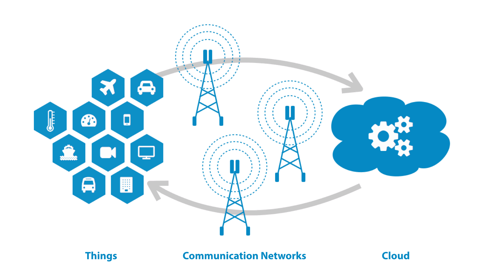

Tracks
This track emphasizes on the current ideas and trends in signal processing and application of techniques for the processing, understanding, learning, retrieval, mining, and extraction of information from signals. It will include information processing and the theory and application of filtering, coding, transmitting, estimating, detecting, analysing, recognizing, synthesizing, recording, and reproducing various audio, video, medical, speech, image, communication, geophysical, sonar, radar, musical signalsand Plant signalling,etc.
This track focuses on novel theories and algorithms for image processing with its advanced applications in various fields. It will include Computer Vision, pattern recognition, image/ video filtering, restoration, biomedical imaging,image and video communications, electronic imaging, image and video systems, motion sensing in videos, remote sensing, Biomedical and applications, etc.
This track focuses on the topics thatadvance to the state-of-the-art of communications and networking research. It includes architecture, protocols, cross-layer, and cognition cycle design for cognitive networks, machine learning and artificial intelligence for cognitive communications and networks, end-to-end and distributed intelligence at and beyond all layers of communications, software-defined networking, cognitive radios, spectrum sharing, trading and relevant economical aspects of networks, security and privacy issues in communication networks, optical communication networks, 4G and 5G technologies, novel emerging services,Antenna and RF Design, applications enabled by such concepts etc.

This tracks focuses on wireless sensor networks and its key role in the execution of the applications. It will include coverage, connectivity, data aggression, energy efficient MAC protocol, mobility management, underwater sensor networks, energy efficient routing protocols, deployment strategies, security attacks andattack detection, efficient flooding, congestion control and avoidance, bio inspired routing techniques, etc.
This track focuses on design and realization of microelectronic systems using VLSI/ULSI technologies. It will include systems architecture, chips and wafer fabrication,system design and partitioning, logic and memory design, digital and analog circuit design, layout synthesis, CAD tools, chips and wafer fabrication, testing and packaging, system level qualification, reliable VLSI/ULSI systems, MEMS, high performance computing, wafer scale integration and multichip modules (MCMs), high-speed interconnects in microelectronic systems, VLSI/ULSI neural networks, adaptive computing systems with FPGA components, mixed analog/digital systems, cost, performance tradeoffs of VLSI/ULSI Systems, adaptive computing using reconfigurable components (FPGAs), Nanoscale Semiconductor Devices, Modelling and Simulation, Bulk and nano materials, Quantum Physics, Device Physics, PV Cells.
This track focuses on natural language processing, artificial intelligence and computational linguistics with respect to the interactions between computers and human languages. It includes deep learning, algorithmic game learning and computational mechanism design, neuromorphic computing genetic algorithms, grammatical evolution, differential evolution, probabilistic meta heuristic, swarm intelligence, ant colony algorithms, artificial immune systems, high performance computing and computational intelligence, fuzzy logic, Neural Network, Bayesian statistical methods, multi-agent systems, stochastic optimization etc.

Emerging Technologies, IOT,IOE, Mechatronics, Machine Learning, Human Computer Interface, ICT,IndustrialAutomations, Autism, Computer Science and Information Technology.